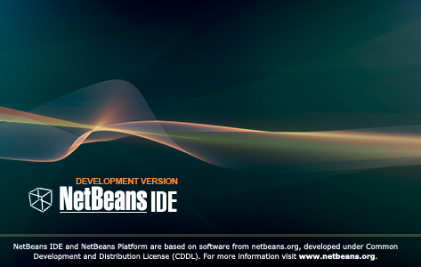
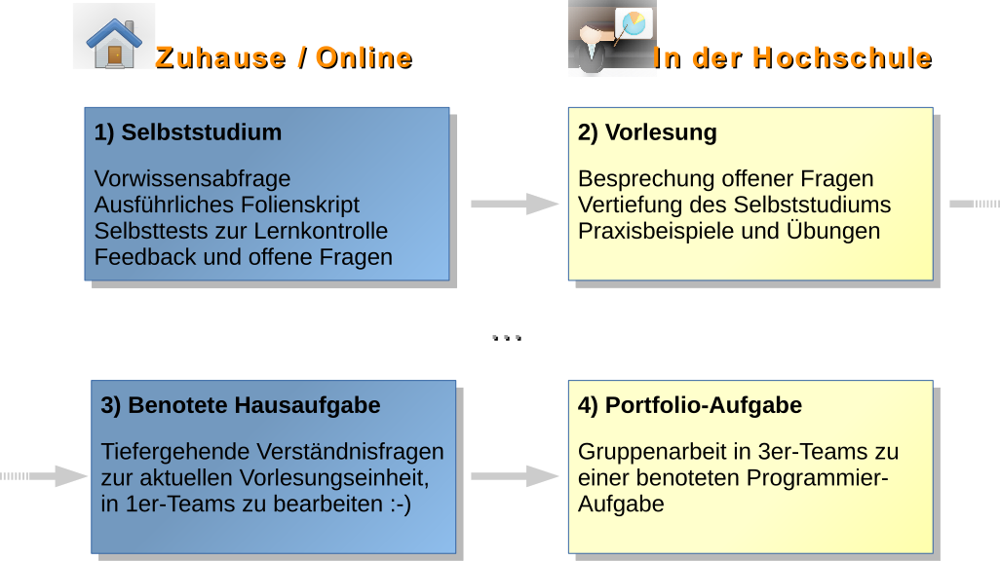

Hier erfährst du alle wichtigen Sachen rund um die Vorlesung.
Beispielsweise, welche Inhalte dran kommen werden, wie die
Prüfung aussieht oder welche Software du dafür benötigst.
Was lange währt wird endlich gut
3. Semester: Webprogrammierung
Von der Erstellung der ersten Webseite bis zur eigenen
Browser App und Client/Server-Webanwendung mit Java
Grundlagen des Webs
Webdesign mit HTML und CSS
Entwicklung von Browser Apps mit JavaScript
Das HTTP-Übertragunsprotokoll im Detail
Webserver-Programmierung mit Java
4. Semester: Verteilte Systeme
Konzeptionelle Vertiefung der Netzwerkprogrammierung im
weiteren Sinne: Von datenbankgestützten Webanwendungen
bis Internet of Things und alles dazwischen
Grundlagen verteilter Systeme
Datenbankgestützte Webanwendungen mit MVC-Architektur
Clientseitige Webanwendungen mit AJAX-Zugriff auf den Server
SOAP- und REST-Webservices als Lingua Franca verteilter Anwendungen
Entfernte Methodenaufrufe mit dem gRPC-Framework
Räumlich und zeitlich getrennte IoT-Anwendungen mit MQTT
Folgendes Wissen aus den bisherigen Semestern wird für diese
Vorlesung als bekannt vorausgesetzt. Wenn du etwas nicht mehr
genau wießt, wiederhole es möglichst bald!
Kommunikation im Internet, OSI-Schichtenmodell, MAC-Adresse,
IP-Adresse, IPv4, IPv6, TCP, UDP, Portnummer, Socket, DNS,
Domain Name, Protokoll, Web Browser, E-Mail Client
Webprogrammierung
Erstellung von Webseiten mit HTML und CSS, Trennung von Darstellung
in Inhalt, Responsive Webdesign, Bootstrap, Media Queries, clientseitige
Logik mit JavaScript, Document Object Model, DOM-Manipulation, Events
in JavaScript, HTTP-Protokoll, Model-View-Controller, Request Handler,
Servlets, Java Server Pages, Templates
Benötigte Software

Netbeans IDE: Unbedingt darauf achten, die Java EE-Version herunterzuladen
Glassfish Webserver: Ist in der Installation von Netbeans für Java EE enthalten
Didaktisches Modell der Vorlesung

Vorlesungsunterlagen in Moodle
Prüfungsform der Vorlesung
Zuerst die gute Nachricht: Es gibt immer noch keine Klausur. 😅 Dann die Ernüchterung: Trotzdem gibt es wieder eine Note. 😰
Portfolioprüfung mit Programmieraufgaben und benoteten Hausaufgaben
Parallel zu den Hausaufgaben gibt es kein weiteres Selbststudium
Für die Programmieraufgaben steht ein ganzer Tag zur Verfügung
Die Programmieraufgaben werden wie gehabt im 3er-Team bearbeitet
Teilnahme am Studium
Einleitung und Reflexionsbericht (je eine Seite)
5 Punkte
Pünktliche Einreichung der Lernkontrollen und Feedbacks
10 Punkte
Bewertung der Gruppenarbeit durch die Gruppenmitglieder
5 Punkte
Benotete Hausaufgaben
Hausaufgabe zu Enterprise Java Beans
15 Punkte
Hausaufgabe zu SOAP-Webservices
15 Punkte
Hausaufgabe zu entfernten Methodenaufrufen
15 Punkte
Hausaufgabe zu Publish/Subscribe
15 Punkte
Benotete Gruppenarbeiten
Entwicklung einer MVC-Webanwendung
20 Punkte
Entwicklung einer REST/AJAX-Webanwendung
20 Punkte
Entwicklung einer IoT-Anwendung mit gRPC
20 Punkte
Entwicklung einer IoT-Anwendung mit MQTT
20 Punkte
➥ Bewertungsformular auf Moodle
Literaturhinweise
Rechtshinweise
Creative Commons Namensnennung 4.0 International
Beliebiges Teilen ist erlaubt
Die Unterlagen dürfen bearbeitet und verändert werden
Wenn die Namens- und Urheberangaben erhalten bleiben
Und keine weiteren Einschränkungen auferlegt werden